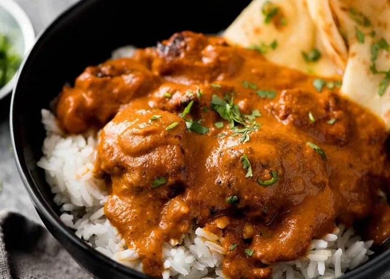

Takoyaki

Hot fried balls of batter filled with green onions, ginger, tempura bits, and octopus, topped with mayonnaise and bonito flakes.
Steak Tacos

Authentic steak tacos topped with cilanto and onions.
Chocolate Chip Cookies

Classic chocolate chip cookies, from scratch.
Chicken Tikka Masala
A dish consisting of roasted marinated chopped chicken in a creamy, spiced sauce.
Tonkatsu (Japanese Fried Pork Cutlet)
A Japanese comfort food, tonkatsu is a tender pork loin deep-fried in Japanese breadcrumbs.
Vietnamese Avocado Smoothie

A creamy, refreshing drink made with ripe avocados.
Vietnamese Spring Rolls

Fresh spring rolls with pork, shrimp, and herbs.
Margherita Pizza

A typical Neapolitan pizza garnished with hand-crushed peeled tomatoes, mozzarella, fresh basil, and extra virgin olive oil.
Thai Milk Tea

A Thai drink made from Ceylon black tea, milk, and sugar.